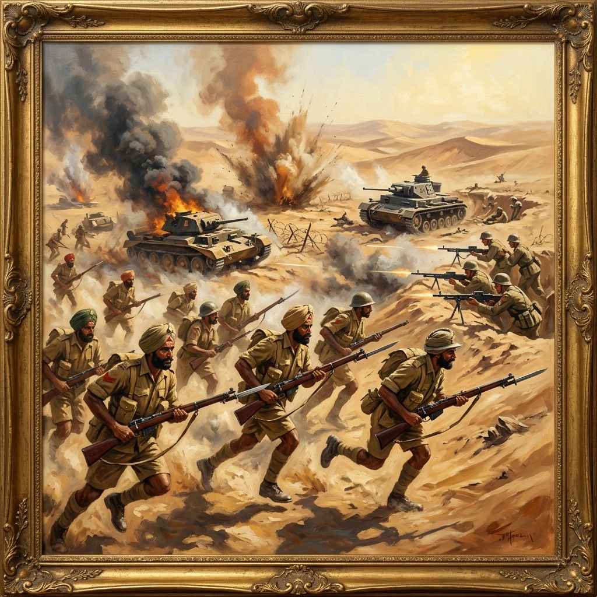

ਉੱਤਰੀ ਅਫਰੀਕਾ ਅਤੇ ਮੱਧ ਪੂਰਬ


ਸਿਰਲੇਖ: North Africa and the Middle East
ਸ਼੍ਰੇਣੀ: North Africa and the Middle East
ਕਲਾਕਾਰ: ਸਿੱਖ ਰੈਜੀਮੈਂਟal Centre
ਸਾਲ: ਇਤਿਹਾਸਕ
ਸ਼੍ਰੇਣੀ: North Africa and the Middle East
ਕਲਾਕਾਰ: ਸਿੱਖ ਰੈਜੀਮੈਂਟal Centre
ਸਾਲ: ਇਤਿਹਾਸਕ
ਉੱਤਰੀ ਅਫਰੀਕਾ ਅਤੇ ਮੱਧ ਪੂਰਬ
ਦੂਜਾ ਵਿਸ਼ਵ ਯੁੱਧ 1939 ਵਿੱਚ ਸ਼ੁਰੂ ਹੋਇਆ, ਅਤੇ ਸਿੱਖ ਬਟਾਲੀਅਨਾਂ ਨੇ ਜਲਦੀ ਹੀ ਅਫਰੀਕਾ, ਮੱਧ ਪੂਰਬ, ਯੂਰਪ ਅਤੇ ਏਸ਼ੀਆ ਵਿੱਚ ਸੇਵਾ ਕੀਤੀ। 1940 ਵਿੱਚ, 4/11 ਸਿੱਖ ਇਰੀਟਰੀਆ ਵਿੱਚ ਚੌਥੀ ਭਾਰਤੀ ਡਵੀਜ਼ਨ ਵਿੱਚ ਸ਼ਾਮਲ ਹੋਏ। 12 ਫਰਵਰੀ 1941 ਨੂੰ ਐਕਵਾ ਕਰਨਲ ਵਿਖੇ, ਨਾਇਕ ਉਜਾਗਰ ਸਿੰਘ ਨੇ ਇਕੱਲੇ ਇਤਾਲਵੀ ਮਸ਼ੀਨ-ਗਨ ਸਥਿਤੀ 'ਤੇ ਹਮਲਾ ਕੀਤਾ ਅਤੇ ਇੰਡੀਅਨ ਆਰਡਰ ਆਫ਼ ਮੈਰਿਟ ਪ੍ਰਾਪਤ ਕੀਤਾ। ਮਾਰਚ ਵਿੱਚ ਸਮਾਣਾ ਪਹਾੜ ਵਿਖੇ, ਕੈਪਟਨ ਮੁਹੰਮਦ ਸਿੱਦੀਕ ਨੇ ਹਮਲੇ ਦੀ ਅਗਵਾਈ ਕੀਤੀ ਅਤੇ ਮਿਲਟਰੀ ਕਰਾਸ ਪ੍ਰਾਪਤ ਕੀਤਾ; ਨਾਇਕ ਦੌਲਤ ਸਿੰਘ ਅਤੇ ਲਾਂਸ ਨਾਇਕ ਨਸੀਬ ਸਿੰਘ ਨੇ ਆਈ.ਡੀ.ਐਸ.ਐਮ. ਕੇਰਨ ਦੇ ਡਿੱਗਣ ਤੋਂ ਬਾਅਦ, 4/11 ਸਿੱਖਾਂ ਨੇ ਓਮਰਸ, ਪੁਆਇੰਟ 204, ਡੇਰਨਾ ਅਤੇ ਡੇਰ-ਅਲ-ਸ਼ੀਨ ਵਿਖੇ ਰੋਮੇਲਜ਼ ਅਫ਼ਰੀਕਾ ਕੋਰਪਸ ਨਾਲ ਲੜਿਆ। ਕੈਪਟਨ ਸਿੱਦੀਕ ਨੇ ਆਪਣੇ ਮਿਲਟਰੀ ਕਰਾਸ ਨੂੰ ਇੱਕ ਬਾਰ ਪ੍ਰਾਪਤ ਕੀਤਾ, ਜਦੋਂ ਕਿ ਲੈਫਟੀਨੈਂਟ ਕਰਨਲ ਜੇ.ਜੇ. ਬਟਾਲੀਅਨ ਨੇ ਬੰਦੂਕਾਂ, ਟਰਾਂਸਪੋਰਟ, ਹਵਾਈ ਜਹਾਜ਼ ਅਤੇ ਹਜ਼ਾਰਾਂ ਕੈਦੀਆਂ ਨੂੰ ਕਬਜ਼ੇ ਵਿਚ ਲੈਣ ਤੋਂ ਬਾਅਦ ਪੂਰਵੇਸ ਨੂੰ ਡੀਐਸਓ ਪ੍ਰਾਪਤ ਹੋਇਆ। ਇਸ ਦੌਰਾਨ 2/11 ਰਾਇਲ ਸਿੱਖ ਨੇ ਇਰਾਕ, ਪਰਸ਼ੀਆ, ਉੱਤਰੀ ਅਫ਼ਰੀਕਾ, ਸਾਈਪ੍ਰਸ, ਇਟਲੀ ਅਤੇ ਗ੍ਰੀਸ ਵਿੱਚ ਸੇਵਾ ਕੀਤੀ, ਜਦੋਂ ਕਿ 3/11 ਰੱਤਰੇ ਦੇ ਸਿੱਖ ਨੇ ਹੈਬਾਨੀਆ ਦਾ ਬਚਾਅ ਕੀਤਾ, 12 ਜੂਨ 1941 ਨੂੰ ਬਗਦਾਦ ਵਿੱਚ ਦਾਖਲ ਹੋਇਆ ਅਤੇ ਅਬੂ ਕਮਾਲ ਦੇ ਮਿਸ਼ਨ ਦੌਰਾਨ ਵਿੱਕੀ ਦੇ ਕਬਜ਼ੇ ਵਾਲੇ ਸੀਰੀਆ ਵਿੱਚ ਦਾਖਲ ਹੋਣ ਵਾਲੀ ਪਹਿਲੀ ਬ੍ਰਿਟਿਸ਼ ਯੂਨਿਟ ਬਣ ਗਈ। ਇਸਨੇ ਬਾਅਦ ਵਿੱਚ ਥੀਏਟਰ ਆਨਰ "ਇਰਾਕ 1941" ਪ੍ਰਾਪਤ ਕੀਤਾ।
ਦੂਜਾ ਵਿਸ਼ਵ ਯੁੱਧ 1939 ਵਿੱਚ ਸ਼ੁਰੂ ਹੋਇਆ, ਅਤੇ ਸਿੱਖ ਬਟਾਲੀਅਨਾਂ ਨੇ ਜਲਦੀ ਹੀ ਅਫਰੀਕਾ, ਮੱਧ ਪੂਰਬ, ਯੂਰਪ ਅਤੇ ਏਸ਼ੀਆ ਵਿੱਚ ਸੇਵਾ ਕੀਤੀ। 1940 ਵਿੱਚ, 4/11 ਸਿੱਖ ਇਰੀਟਰੀਆ ਵਿੱਚ ਚੌਥੀ ਭਾਰਤੀ ਡਵੀਜ਼ਨ ਵਿੱਚ ਸ਼ਾਮਲ ਹੋਏ। 12 ਫਰਵਰੀ 1941 ਨੂੰ ਐਕਵਾ ਕਰਨਲ ਵਿਖੇ, ਨਾਇਕ ਉਜਾਗਰ ਸਿੰਘ ਨੇ ਇਕੱਲੇ ਇਤਾਲਵੀ ਮਸ਼ੀਨ-ਗਨ ਸਥਿਤੀ 'ਤੇ ਹਮਲਾ ਕੀਤਾ ਅਤੇ ਇੰਡੀਅਨ ਆਰਡਰ ਆਫ਼ ਮੈਰਿਟ ਪ੍ਰਾਪਤ ਕੀਤਾ। ਮਾਰਚ ਵਿੱਚ ਸਮਾਣਾ ਪਹਾੜ ਵਿਖੇ, ਕੈਪਟਨ ਮੁਹੰਮਦ ਸਿੱਦੀਕ ਨੇ ਹਮਲੇ ਦੀ ਅਗਵਾਈ ਕੀਤੀ ਅਤੇ ਮਿਲਟਰੀ ਕਰਾਸ ਪ੍ਰਾਪਤ ਕੀਤਾ; ਨਾਇਕ ਦੌਲਤ ਸਿੰਘ ਅਤੇ ਲਾਂਸ ਨਾਇਕ ਨਸੀਬ ਸਿੰਘ ਨੇ ਆਈ.ਡੀ.ਐਸ.ਐਮ. ਕੇਰਨ ਦੇ ਡਿੱਗਣ ਤੋਂ ਬਾਅਦ, 4/11 ਸਿੱਖਾਂ ਨੇ ਓਮਰਸ, ਪੁਆਇੰਟ 204, ਡੇਰਨਾ ਅਤੇ ਡੇਰ-ਅਲ-ਸ਼ੀਨ ਵਿਖੇ ਰੋਮੇਲਜ਼ ਅਫ਼ਰੀਕਾ ਕੋਰਪਸ ਨਾਲ ਲੜਿਆ। ਕੈਪਟਨ ਸਿੱਦੀਕ ਨੇ ਆਪਣੇ ਮਿਲਟਰੀ ਕਰਾਸ ਨੂੰ ਇੱਕ ਬਾਰ ਪ੍ਰਾਪਤ ਕੀਤਾ, ਜਦੋਂ ਕਿ ਲੈਫਟੀਨੈਂਟ ਕਰਨਲ ਜੇ.ਜੇ. ਬਟਾਲੀਅਨ ਨੇ ਬੰਦੂਕਾਂ, ਟਰਾਂਸਪੋਰਟ, ਹਵਾਈ ਜਹਾਜ਼ ਅਤੇ ਹਜ਼ਾਰਾਂ ਕੈਦੀਆਂ ਨੂੰ ਕਬਜ਼ੇ ਵਿਚ ਲੈਣ ਤੋਂ ਬਾਅਦ ਪੂਰਵੇਸ ਨੂੰ ਡੀਐਸਓ ਪ੍ਰਾਪਤ ਹੋਇਆ। ਇਸ ਦੌਰਾਨ 2/11 ਰਾਇਲ ਸਿੱਖ ਨੇ ਇਰਾਕ, ਪਰਸ਼ੀਆ, ਉੱਤਰੀ ਅਫ਼ਰੀਕਾ, ਸਾਈਪ੍ਰਸ, ਇਟਲੀ ਅਤੇ ਗ੍ਰੀਸ ਵਿੱਚ ਸੇਵਾ ਕੀਤੀ, ਜਦੋਂ ਕਿ 3/11 ਰੱਤਰੇ ਦੇ ਸਿੱਖ ਨੇ ਹੈਬਾਨੀਆ ਦਾ ਬਚਾਅ ਕੀਤਾ, 12 ਜੂਨ 1941 ਨੂੰ ਬਗਦਾਦ ਵਿੱਚ ਦਾਖਲ ਹੋਇਆ ਅਤੇ ਅਬੂ ਕਮਾਲ ਦੇ ਮਿਸ਼ਨ ਦੌਰਾਨ ਵਿੱਕੀ ਦੇ ਕਬਜ਼ੇ ਵਾਲੇ ਸੀਰੀਆ ਵਿੱਚ ਦਾਖਲ ਹੋਣ ਵਾਲੀ ਪਹਿਲੀ ਬ੍ਰਿਟਿਸ਼ ਯੂਨਿਟ ਬਣ ਗਈ। ਇਸਨੇ ਬਾਅਦ ਵਿੱਚ ਥੀਏਟਰ ਆਨਰ "ਇਰਾਕ 1941" ਪ੍ਰਾਪਤ ਕੀਤਾ।

🇬🇧 English
🇮🇳 हिन्दी
ੴ ਪੰਜਾਬੀ
ਮੋਬਾਈਲ 'ਤੇ ਖੋਲ੍ਹੋ
ਆਪਣੇ ਫ਼ੋਨ 'ਤੇ ਅੰਗਰੇਜ਼ੀ, ਹਿੰਦੀ ਜਾਂ ਪੰਜਾਬੀ ਵਿੱਚ ਦੇਖਣ ਲਈ ਇਸ QR ਕੋਡ ਨੂੰ ਸਕੈਨ ਕਰੋ।